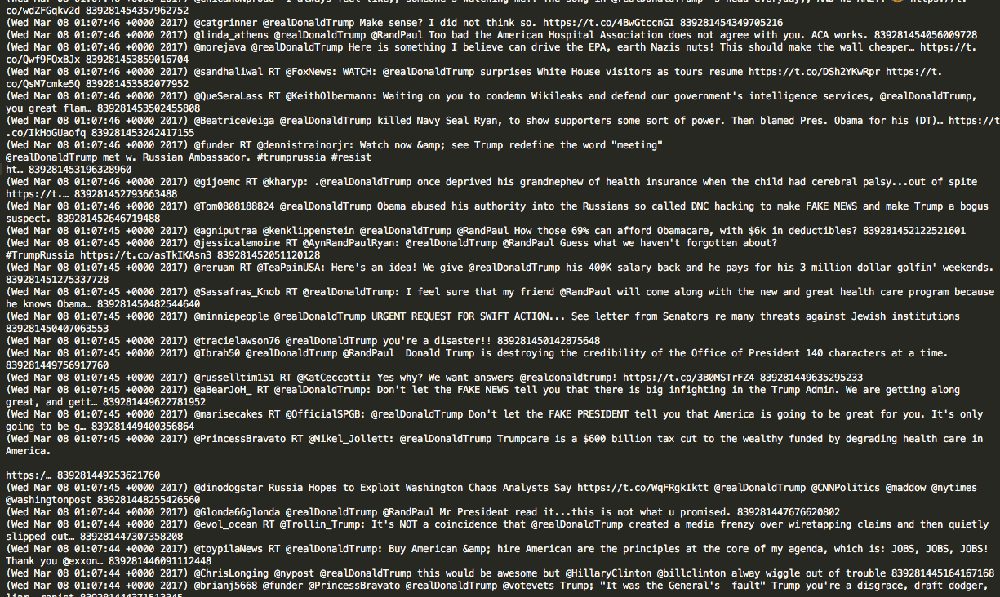
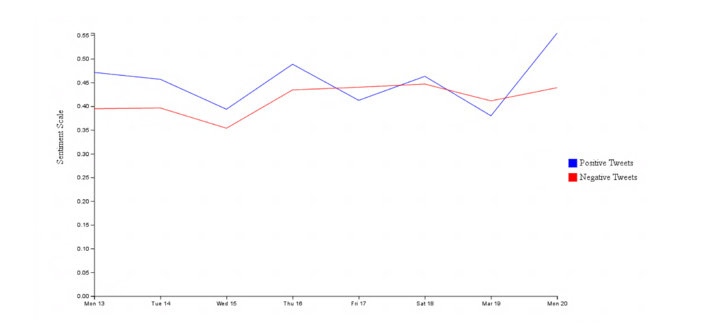

Use the Twitter API to gather data about the positivity and negativity of Donald Trump’s tweets to get a “Twitter approval rating.” We can filter these tweets by time and by location, so our plan initially was to compare Trump’s Twitter approval rating to his actual approval rating by area over time as things changed. We were going to create a D3 map to examine the country, and graphs to look at how his approval rating changed with time.
Our new plan is to create a machine-learning Twitter bot that responds to Trump’s tweets intelligently. Whenever Trump tweets, the bot will analyze the responses to him for the four hours after his tweet from the Twitter public. It will determine the average positivity or negativity of his tweets, and will respond to Trump with a tweet that represents the general Twitter sentiment towards his tweet. We will still examine the positivity and negativity scores by region, so we can make a map of positive and negative responses to his tweets. In addition, we can plot his Twitter favorability over time, and present how Twitter responded to tweets about certain issues.
Twitter’s userbase is, on average, quite young. As a result, we expect Trump’s Twitter audience to be left-learning, and the general Twitter response to Trump’s tweets, no matter the subject of the tweet, to be quite negative. More specifically, however, we expect responses from locations within the Northeast and West to skew negatively, but responses from Southern regions to be more positive, as per recent presidential satisfaction polls.
Our data will be collected from Twitter’s developer API. We will gather responses (retweets, replies, tweets at Trump) to Trump’s tweets. Our data will consist of the message body of the tweet, as well metadata like timestamp, tweet ID and location of tweeter. Then we will run sentiment analysis on each these tweets to get positivity and negativity score of them. At this point, we have written code the extract data from Twitter’s API. We are finalizing the specific parameters on which we wish to select the data (time, user, location, etc.), but we currently have a versatile framework that will allow use to easily get the data once our parameters have been chosen. We must decide the specific tweets with which to train our Twitter Bot, and will capture data in response to these tweet within 4 hours after they went live. The Twitter API allows one to easily get data in response to a user based on a timestamp. The image below shows a sample of some data we have extracted from the Twitter API. It is a sample of data that simply shows responses to @realDonaldTrump over 20 minutes of tweeting. 
We plan to use D3 to create all of our visualizations. Our first visualization will be a line graph that plots Donald Trump’s favorability on Twitter over time. In our second visualization, we plan to use D3’s mapping functions to break down Donald Trump’s favorability by location. Our third visualization will be a bar graph that compares Trump’s favorability in different subjects, such as immigration, health care, and Russia.
To implement machine learning into our project, we intend to create a Twitter Bot that is trained on 4 hours worth of tweets responding to Donald Trump’s most recent tweet, based on its subject (immigration, foreign policy, etc.). Given positivity and sentiment from real user responses, the Twitter Bot will create its own tweet responding to Donald Trump. We’re limited by Twitter biases--for instance, if Twitter skews negatively or positively in opinion to Donald Trump. The Twitter Bot will represent the average and overall Twitter response, not the national response.
Now that we are able to gather data from Twitter’s API, we must decide which specific tweets we would like to gather data for. Once these tweet’s have been selected, we will gather the desired data within the 4 hour period following each of the chosen tweets. This data can then be used to train our Twitter Bot so it is able to respond to any new tweet that goes live.
Our data must also be organized so that we are able to create visualizations based on time, geographical location, or other parameters that we must finalize.
Once our Twitter Bot is appropriately trained, we may plan to configure it such that it can gather and analyze data in order to respond to a user (@realDonaldTrump).
Overview of next steps:
At this point in our project, we’ve spent some time getting closer to a final project proposal, and nailing down some of the details of our project. The Twitter API is more difficult than we initially anticipated, in that gathering data by location or time period is difficult (if not impossible). As a result, our initial goals of mapping positive and negative tweets across the country and evaluating responses to Trump’s individual tweets aren’t going to be quite feasible. What we can do instead is get data day-by-day, and do sentiment analysis over that unit of time. Our plan is to gather the full list of tweets at Donald Trump’s @realdonaldtrump account for each day of April. Equipped with this data, we can both run sentiment analysis on the tweet (to get an average positivity/negativity score for the day) and label each tweet with a keyword. That way, we can evaluate positivity/negativity scores for certain issues based on certain keywords. Tweets that are about immigration, for example, will be grouped together so we can get a Twitter approval rating of Trump’s immigration policies.
We have collected this Twitter data for the week of March 13th to 20th and analyzed it using sentiment analysis. We visualized this analysis using D3 in the following graph, which was included in our midterm report. The graph indicates the average sentiment values for positive and negative tweets by day. As summarized in the report, we noticed that general local minima/maxima occurred on the same days. Additionally, positive tweets appeared to be more variable in sentiment values. Overall, Donald Trump received more positive than negative replies and retweets from March 13th through March 20th.
For our first ML algorithm, we used a neural network to create a tweet given a keyword. Once we have collected the April twitter data, we will partition our data based on topic keywords, such as “immigration” and “policy”. For each topic, the tweets will be further partitioned into positive and negative sentiment. Within each of these categories, the tweets will be added into bigram dictionaries, with probabilities assigned to each bigram. At the end of this process, we will have a series of dictionaries, with each word hashed to a word that followed it in a tweet, as well as the number of times this occurred. We will choose a specific dictionary based on topic and sentiment score (positive/negative), and use the series of bigrams to construct the tweet. We currently have the framework for this algorithm, trained on one of Trump’s speeches and some of his tweets. As we collect the April data, we will retrain the algorithm using these tweets. The ML algorithm currently produces tweets such as:
We have not implemented our second machine learning algorithm yet, but we plan to make an ML algorithm that performs sentiment analysis. This ML algorithm would replace our current implementation, which uses a dictionary of words with sentiment scores that we found online. We calculate the overall sentiment of a tweet by totalling the sentiment scores of each word in the given tweet. We plan to use many of the tools we used in the ML lab because the lab also performed sentiment analysis on tweets. We’re also planning to train our algorithm using the twitter data provided in the lab, which was given a polarity based on the positive and negative sentiment of the tweet using Sentiment140. We decided to use this data instead of scoring the tweets we collect ourselves because it would take too long to manually score enough tweets to train the algorithm with. In addition, we reasoned that the tweets in this dataset, given its size, were similar in language and in sentiment to the tweets we collected about Donald Trump.
With our first machine learning algorithm implemented and a plan laid out for a second one, we are feeling good about our progress so far, despite the setbacks with Twitter’s API. In the coming weeks, we plan to continue to collect data, implement our second ML algorithm, and work on our visualizations.